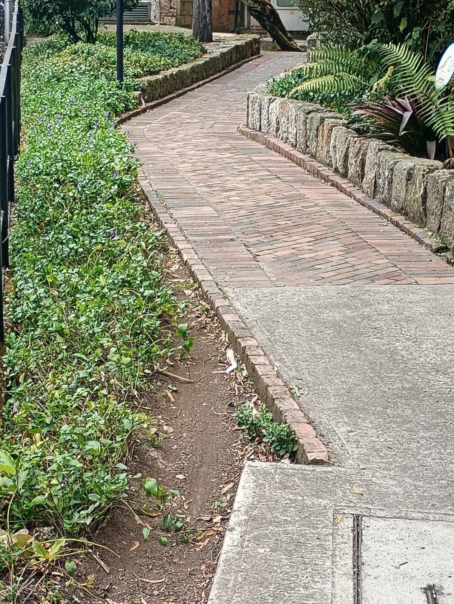
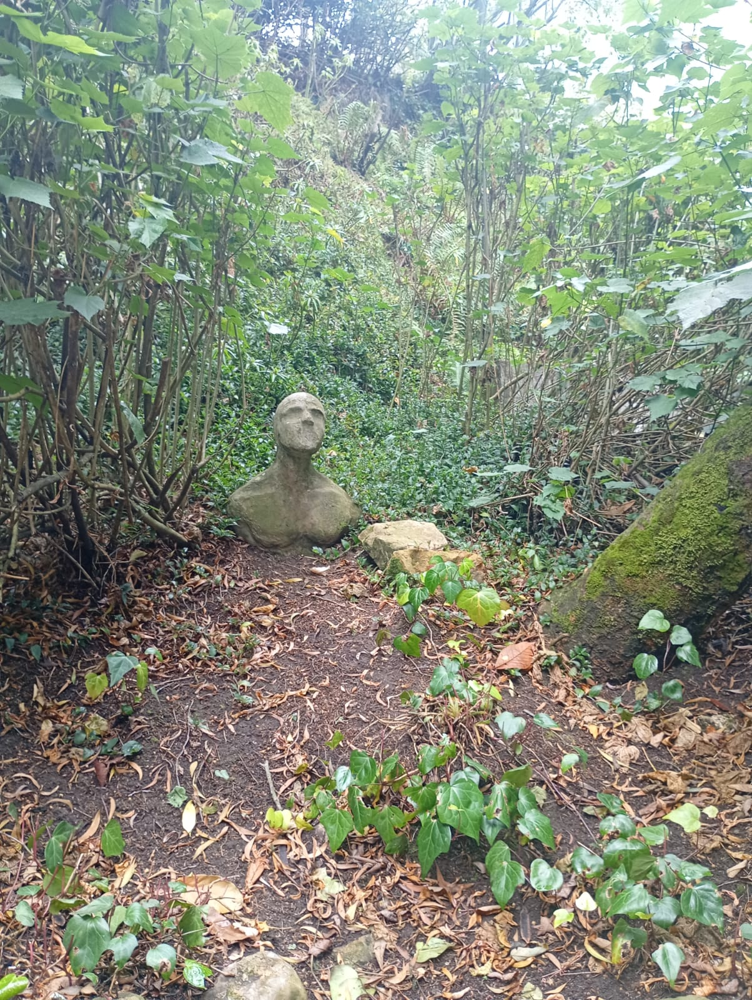
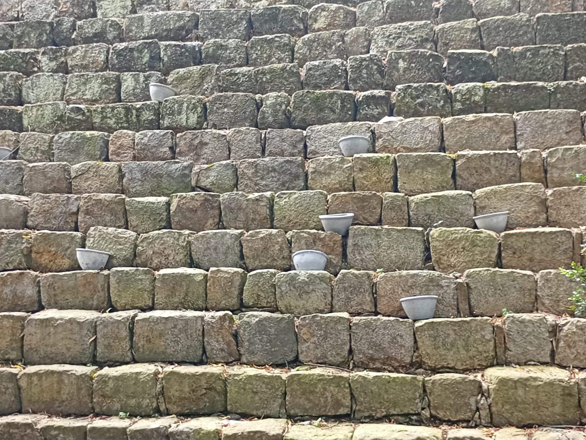
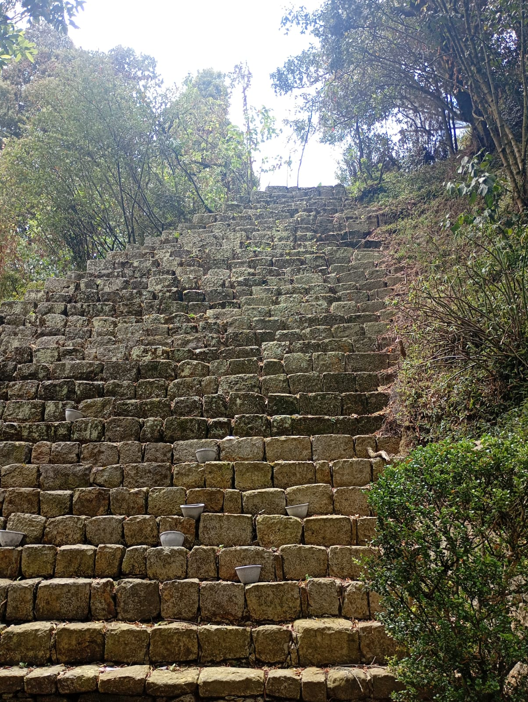

Se dice que este rito tiene sus raíces en las antiguas civilizaciones que habitaban la región, y que su propósito era honrar a los dioses de la naturaleza y asegurar la prosperidad de las cosechas. El rito consiste en una serie de ceremonias y rituales que se llevan a cabo en lugares sagrados, como templos y montañas, y que incluyen ofrendas, danzas y cantos.Se decía que, en lo profundo de la universidad, los estudiantes elegidos participaban en un rito ancestral que conectaba el conocimiento con la naturaleza y los espíritus guardianes del campus.

El busto oculto entre la maleza: En la primera estación, los iniciados encontraban un busto cubierto por plantas. Este representaba al “Guardián del Silencio”. Antes de continuar, debían permanecer en silencio absoluto, escuchando los sonidos del bosque, como símbolo de respeto hacia la sabiduría que no se dice, pero se siente.

Los cuencos sobre los muros de piedra: Luego, los estudiantes ascendían hacia un muro escalonado donde descansaban cuencos metálicos. Cada cuenco debía llenarse con agua recogida del rocío de la mañana. Se creía que el agua purificaba las intenciones y que, al colocarla en los recipientes, los jóvenes ofrecían su voluntad al conocimiento.

La escalera de los desafíos: La tercera prueba era subir la escalinata empinada, donde también reposaban pequeños cuencos. Cada escalón representaba un desafío académico y personal. Los estudiantes debían subir en silencio, sin mirar atrás, como símbolo de avanzar en la vida sin temer a los errores pasados.

El círculo de las cabezas: En el corazón del rito se encontraba un círculo de esculturas de cabezas de colores. Cada una representaba una virtud: la sabiduría, la creatividad, la valentía, la memoria. Los iniciados debían elegir una cabeza y meditar frente a ella, buscando la virtud que más necesitaban para continuar su camino universitario.

El sendero de los pilares: Finalmente, el rito culminaba en el sendero bordeado por pilares con esculturas. Allí, los estudiantes caminaban lentamente, tocando cada pilar con la mano derecha. Se decía que al hacerlo, recibían la fuerza de quienes habían pasado antes por el mismo camino. El rito terminaba cuando el último pilar era tocado, sellando la unión entre tradición y futuro.

Hoy en día, el Rito de los Andes sigue siendo practicado por algunas comunidades indígenas, quienes lo consideran una parte importante de su identidad cultural y espiritual.